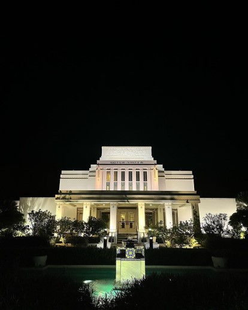
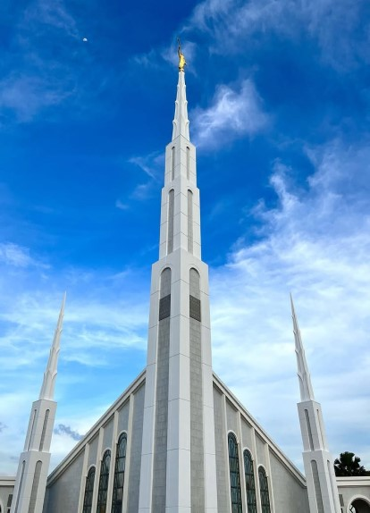

"This is one of my most favourite temples because of the special experience that comes with it. I was able to get my endowment
here in Cebu, Phillippines. This was also during my mission and it was also during COVID, which meant that access to the temple was limited.
I was able to be blessed to enter into the temple during such a difficult time."

Hawaii
"I am happy to be able to go to the Hawaii temple because it is one of the very first few temples in the infancy of the restored church. I am blessed to be able to
finally see an amazing temple that has blessd the lives of the countless people in Hawaii."

Manila
"The Manila temple is one of the most popular temples to visit if you live in Malaysia as it is technically the closest temple in our
vicinity. Many members come here to obtain their endowment and enjoy the blessings of the temple."